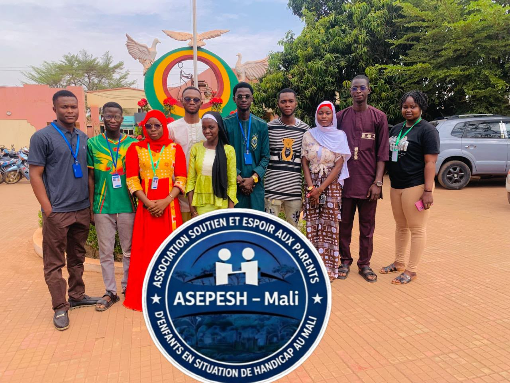
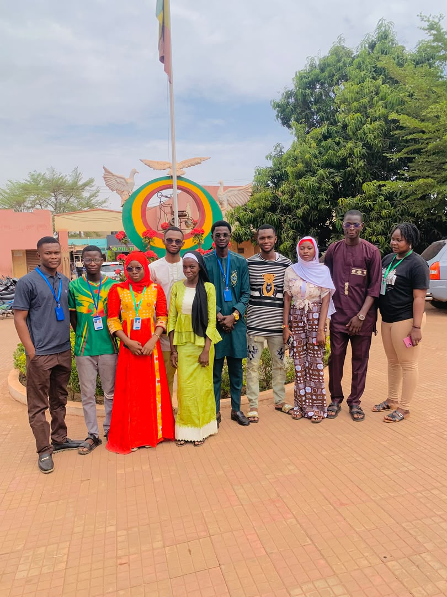
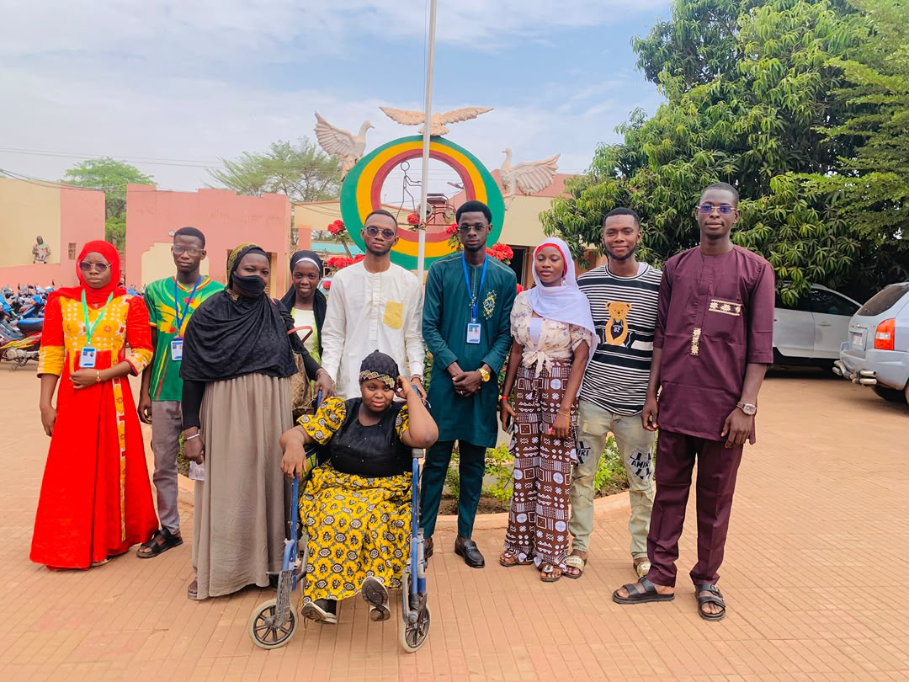
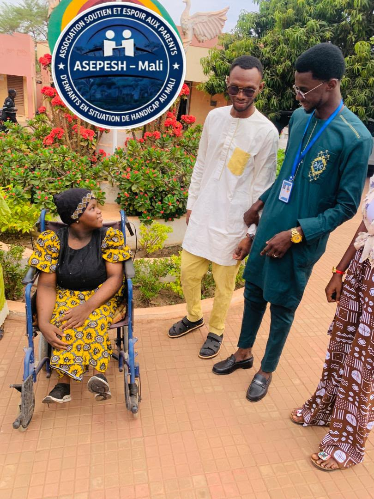

En images
L'association sur le terrain
Rencontres entre membres, accompagnement des familles, travail au siège et partenariats : quelques moments de la vie de l'ASEPESH-Mali. Cliquez sur une photo pour l'agrandir.








Vous avez des photos de nos activités à partager ? Envoyez-les nous
Derrière chaque photo
Une famille accompagnée
Rejoignez l'ASEPESH-Mali ou soutenez son action : c'est ce qui rend ces moments possibles.